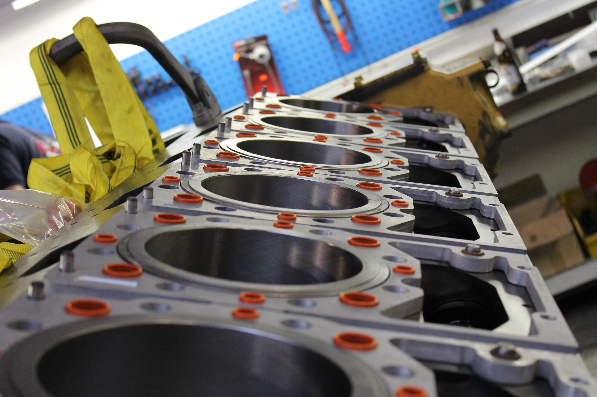
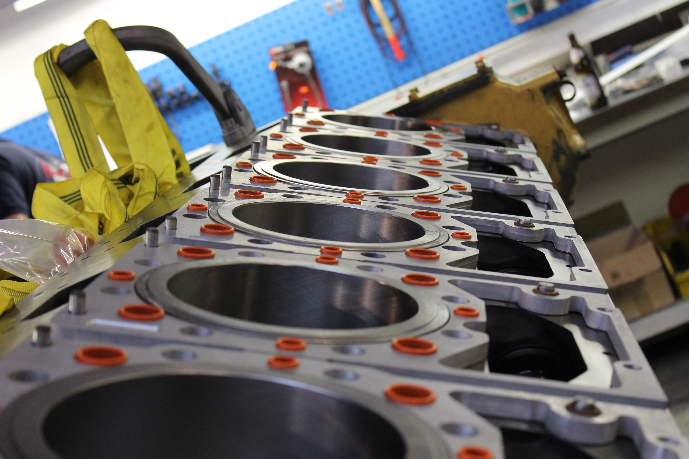

Motor-Generalüberholung
Selbstverständlich bieten wir Ihnen auch eine Motor-Generalüberholung an. Hierbei wird der defekte Motor komplett zerlegt und gereinigt. Nach der Schadensbegutachtung erfolgt die Erstellung eines Kostenvoranschlages. Sämtliche Arbeiten werden vor Ort von unserem Fachpersonal durchgeführt. Das benötigte Material für die Instandsetzung, wie auch Anbauteile (Filter, Riemen, Lima, Starter,..) sind bei uns in Erstausrüsterqualität erhältlich. Nachfolgend sind sämtliche zu erledigenden Arbeiten aufgelistet. Es handelt sich hier um einen Mazda Diesel – Motor.
Motor im Anlieferungszustand
Zerlegung des Motors
 


Einzelteile reinigen, prüfen und vermessen
Instandsetzungsarbeiten
wie z.B. Motorblock honen, Pleuelstangengrundbohrung honen, Ventilführungen erneuern, Ventilkegel schleifen, Ventilsitz fräsen, Zylinderkopf planen,…


Nun beginnt die eigentliche Arbeit unserer Motorspezialisten. Mithilfe modernster Maschinen werden die Einzelteile bearbeitet. Auf der Zylinderlauffläche wird der für den reibungslosen Lauf nötige Kreuzschliff mittels honen wiederhergestellt. Bei Bedarf wird der Zylinder (dieBuchse) auf das richtige Maß aufgebohrt. Der Motorblock wird mittels unserer Planfräse geplant, um die Dichtheit zwischen Motorblock und Zylinderkopf zu garantieren. Die Kurbelwelle wird poliert und bei Bedarf auf Untermaß geschliffen. Falls nötig wird die Pleuellagergrundbohrung gehont. Der Zylinderkopf wird im beheiztem Wasserbad auf Dichtheit geprüft (abgedrückt). Beschädigte Ventilführungen werden erneuert bzw. nachgearbeitet. Die Dichtheit der Ventile wird durch Ventilsitzfräsen und Ventilkegelschleifen wiederhergestellt. Anschließend wird auch der Zylinderkopf geplant.
Einzelteile zusammenbauen und reinigen

Nach erledigter Bearbeitung werden sämtliche Teile noch einmal elektrochemisch gereinigt und für den Zusammenbau vorbereitet